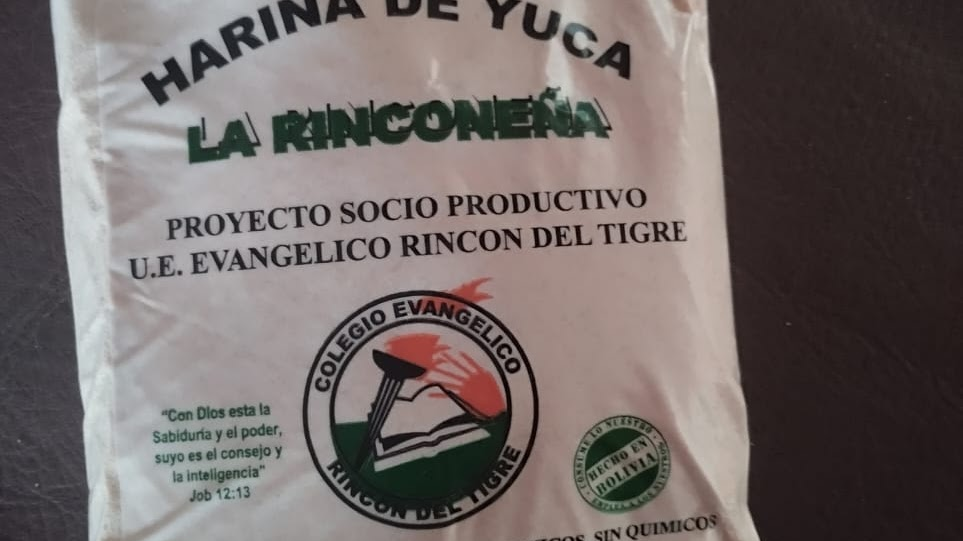

PRODUCTOS Y SERVICIOS

PRODUCTOS Y SERVICIOS OFERTADOS
HARINA DE YUCA RINCONEÑA
Te ofrecemos la mejor harina de yuca elaborada artesanalmente
por la Unidad Educativa Evangélico Rincón del Tigre, la misma
que es parte del producto del Proyecto Sociocomunitario Productivo,
esto con el fín de aprovechar la producción de la yuca en la región
y darle un valor agregado.
Presione la imagen para más.
|
 |
|
|
GANADERIA
En la comunidad Rincón del Tigre y sus aledañas se realizan
la crianza de diveros tipos de ganado y se produce carne de
la mejor calidad, pongasé en contacto de con los ganaderos
mas experimentados de la región para poder adquirir las mas
variadas reses y carne de primera.
Presione la imagen para más. |
AGRICULTURA
La zona Comunidad del Rincón del Tigre y sus colindantes son
tierras muy productivas, las mismas nos brindan diversidad
de productos nutritivos para nuestra alimentación.
Presione la imagen para más
|
|
|
|
APICULTURA
Las abejas son las guerreras encargadas de la polinización
y garantizar la continuidad de las plantas y flores, los
comunarios de la regíon son conscientes de ello, es por eso
que se dedican ala apicultura y en beneficio propio aprovecha
las mieles qeu ellas producen de manera sostenible y amigable
con la naturaleza.
Presione la imagen para más. |
LECHE Y DERIVADOS
Los derivados de la leche producida en la Comunidad Rincón del Tigre
son famosas por su gran calidad y delicioso sabor, es por ello que
dedicamos esta sección para la oferta de estos productos mencionados.
Presione la imagen para más.
|
|
|
|
TRANSPORTE
Existen diversas camionetas que brindan el servicio de transporte con
comodidad y calidez, en esta sección se mencionan los contactos de
algunos de los chóferes profesionales que brindan dicho servicio las
24 horas del día y los 7 días de la semana.
Presione la imagen para más. |
|